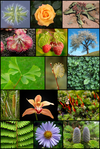

plant

Definition: Plants are predominantly photosynthetic eukaryotes, forming the kingdom Plantae. Many are multicellular. Historically, the plant kingdom encompassed all living things that were not animals, and included algae and fungi. All current definitions exclude the fungi and some of the algae. By one definition, plants form the clade Viridiplantae (Latin for "green plants") which consists of the green algae and the embryophytes or land plants. The latter include hornworts, liverworts, mosses, lycophytes, ferns, conifers and other gymnosperms, and flowering plants. A definition based on genomes includes the Viridiplantae, along with the red algae and the glaucophytes, in the clade Archaeplastida.
Source: Wikipedia
Wikipedia Page
Wikidata Page
Occurs in: